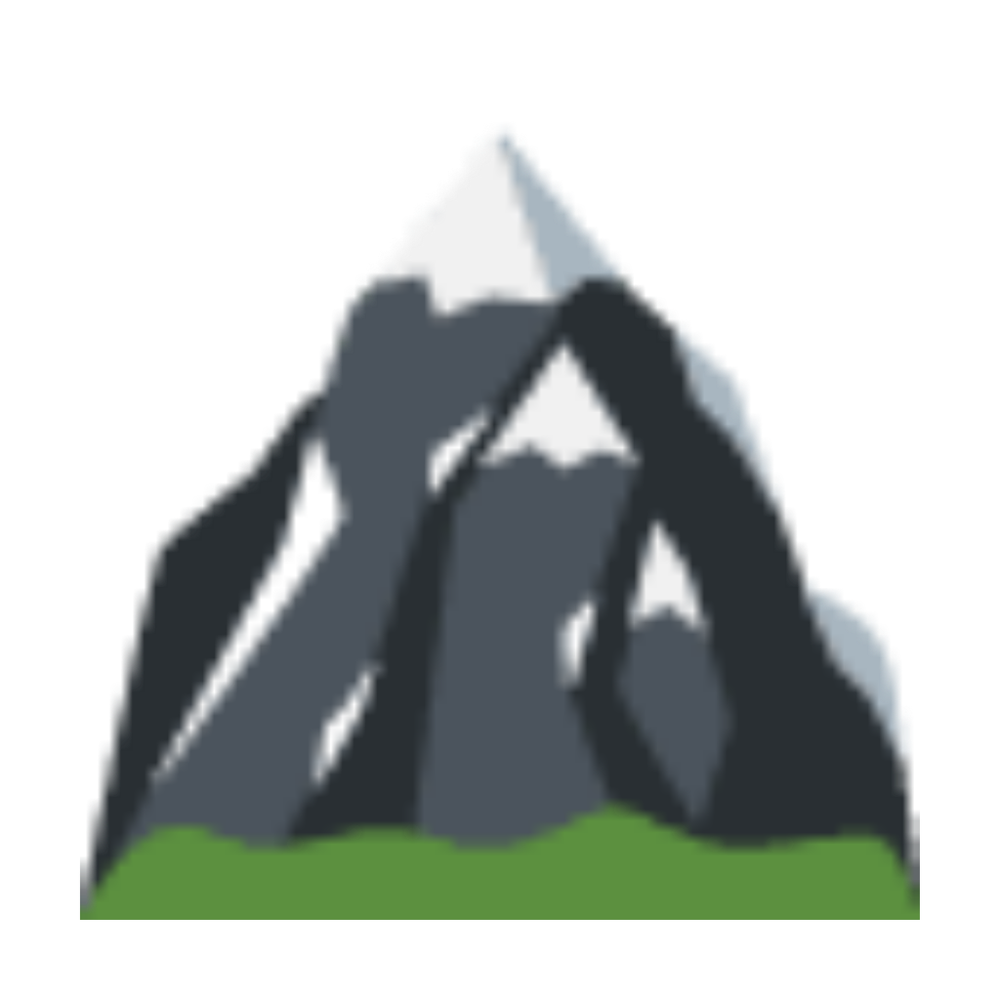

Caricamento…
Scegli una cartella con le uscite (una sottocartella per escursione) oppure genera i dati con lo script:
python3 build.py
Poi ricarica la pagina, oppure usa «Carica cartella».
Struttura: cartella base → (anno o raccolta, es. «Escursioni 2019 con Nadia») → cartella per ogni uscita (es. «73)Pizzo Formico 25-11-2019») → dentro .gpx / .kml e .jpg. Se non c’è il livello anno, ogni sottocartella della base è un’uscita.
Dopo una scansione, i dati sono salvati in questa app (sul Mac, nello spazio del browser/Electron) e si ripristinano al prossimo avvio.